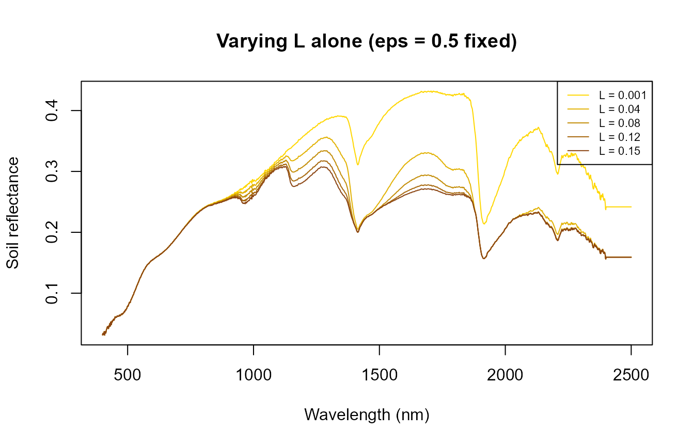
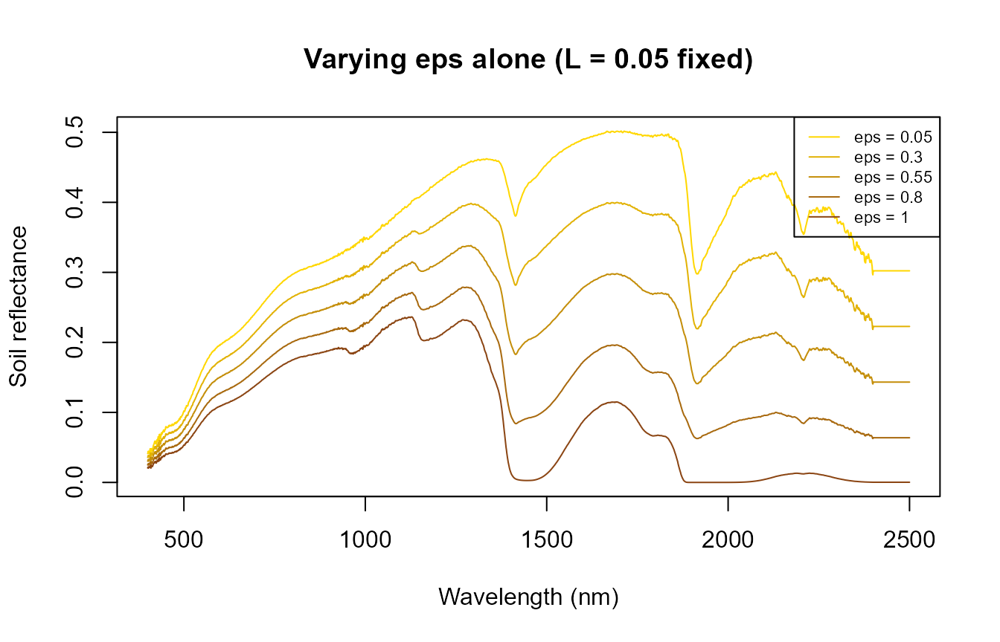
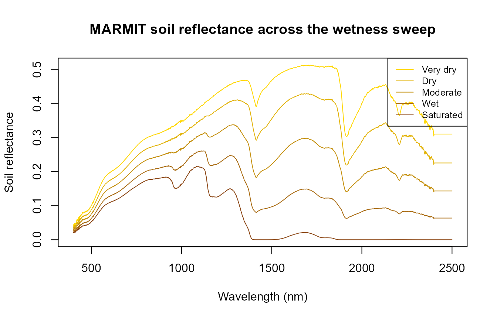
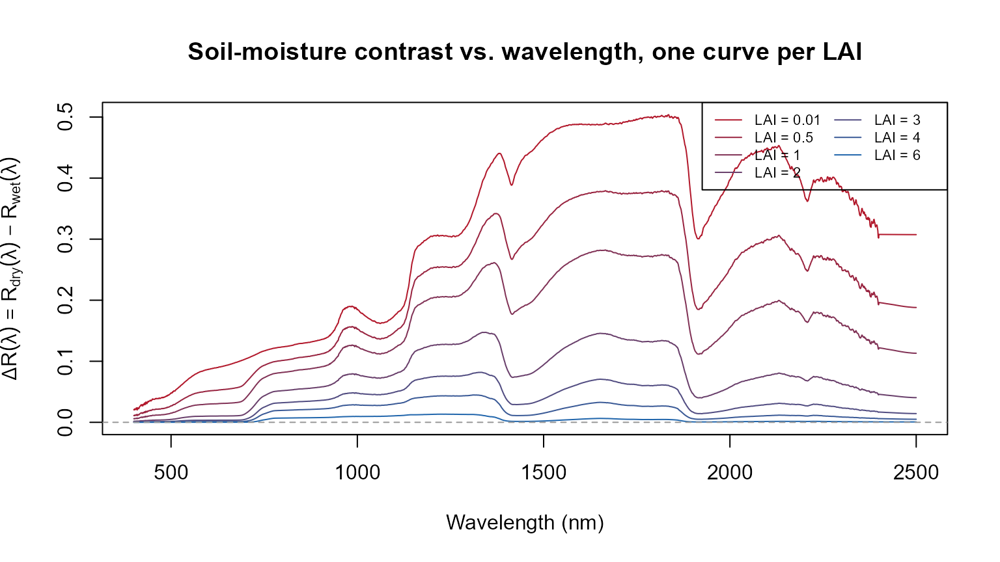
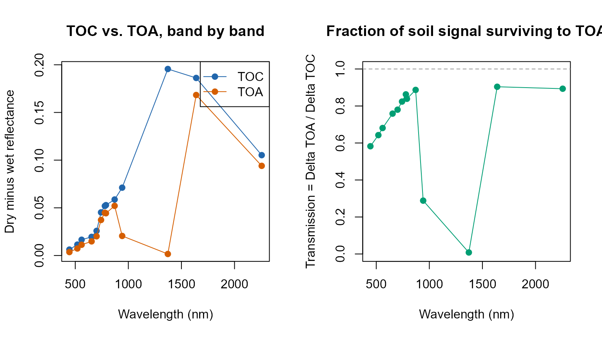

16. MARMIT + fourSAIL + SPART: Realistic Soil Moisture, Canopy to Atmosphere
t16-marmit-soil-in-canopy.Rmd
library(ToolsRTM)Why soil matters to a canopy simulation
Top-of-canopy reflectance is a mixture of leaf optics and the soil
background showing through the canopy gaps, weighted by how closed the
canopy is (LAI, leaf angle, hotspot). Most examples elsewhere in this
tutorial series use a fixed, arbitrary rsoil – e.g. a 50/50
blend of a dry and wet reference spectrum (Tutorial 01), or a flat
rep(0.15, ...) (Tutorials 04-13). That’s fine for isolating
a leaf/canopy trait’s own effect, but it sidesteps a real question:
how much does the soil’s actual moisture state change what a
sensor sees – at the canopy level AND at the satellite level – and does
that depend on how much vegetation covers it?
ToolsRTM::get.marmit.rsoil() (MARMIT: Bablet et al.,
soil reflectance as a function of surface water film thickness) gives a
physically-based answer instead of an arbitrary blend – see the Parameter &
Trait Glossary for what L and eps mean and
their realistic ranges. This page works through the sensitivity
progression L -> eps -> LAI -> wavelength -> TOC/TOA
-> atmospheric variability, then feeds MARMIT’s output into
BOTH foursail() (TOC only, Tutorials 01-02) and
SPART() (TOC and TOA together, Tutorial 03) – MARMIT’s soil
physics is the same either way; what changes is how far downstream that
soil signal survives.
MARMIT: L (water film) and eps (wet fraction), separately first
|
v
rsoil spectrum
/ \
v v
fourSAIL SPART
(TOC) (TOC AND TOA,
+ atmosphere)1. L and eps are two different knobs –
vary them one at a time first
MARMIT’s wetness is controlled by two physically distinct parameters:
L (water film thickness, cm) and eps (fraction
of the surface that’s wet). Varying both at once (as a “wetness sweep” –
Section 3 does this, deliberately, as a realistic combined scenario)
makes it impossible to tell which one is actually driving a given
change. Vary each alone first:
L_seq <- c(0.001, 0.04, 0.08, 0.12, 0.15)
soils_L <- lapply(L_seq, function(l) get.marmit.rsoil(database = "Bablet_2016", id = 1, L = l, eps = 0.5, wl.out = 400:2500))
cat("L alone (eps fixed at 0.5) -- SMC (%):", round(sapply(soils_L, function(s) s$SMC), 1), "\n")
#> L alone (eps fixed at 0.5) -- SMC (%): 4.1 36 46.7 47.1 47.1
cols_L <- colorRampPalette(c("gold", "saddlebrown"))(length(L_seq))
matplot(soils_L[[1]]$wavelength, sapply(soils_L, function(s) s$rsoil.wet), type = "l", lty = 1, col = cols_L,
xlab = "Wavelength (nm)", ylab = "Soil reflectance", main = "Varying L alone (eps = 0.5 fixed)")
legend("topright", paste("L =", L_seq), col = cols_L, lty = 1, cex = 0.7)
eps_seq <- c(0.05, 0.3, 0.55, 0.8, 1.0)
soils_eps <- lapply(eps_seq, function(e) get.marmit.rsoil(database = "Bablet_2016", id = 1, L = 0.05, eps = e, wl.out = 400:2500))
cat("eps alone (L fixed at 0.05) -- SMC (%):", round(sapply(soils_eps, function(s) s$SMC), 1), "\n")
#> eps alone (L fixed at 0.05) -- SMC (%): 5.6 26.7 43.6 46.7 47
cols_eps <- colorRampPalette(c("gold", "saddlebrown"))(length(eps_seq))
matplot(soils_eps[[1]]$wavelength, sapply(soils_eps, function(s) s$rsoil.wet), type = "l", lty = 1, col = cols_eps,
xlab = "Wavelength (nm)", ylab = "Soil reflectance", main = "Varying eps alone (L = 0.05 fixed)")
legend("topright", paste("eps =", eps_seq), col = cols_eps, lty = 1, cex = 0.7)
Both L alone and eps alone can drive SMC
across nearly the whole range (roughly 4% to 47%) – neither parameter is
redundant with the other; a thicker water film and a larger wet fraction
are genuinely different physical situations that MARMIT’s model treats
separately, even though both ultimately darken the soil.
Why do “Wet” and “Saturated” report almost the same SMC below, despite different spectra?
Worth explaining before the combined sweep in Section 2, since it
looks like a discrepancy otherwise: internally,
get.marmit.rsoil() computes phi <- L * eps,
then estimates SMC from phi through a
sigmoid function
(SMC = K / (1 + a * exp(-psi * phi))) that saturates toward
its ceiling K as phi grows. For this soil’s
calibrated sigmoid parameters, that ceiling is essentially reached by
phi around 0.07-0.08 – so “Wet”
(L=0.09, eps=0.8, phi=0.072) and “Saturated”
(L=0.15, eps=1.0, phi=0.15) land on nearly the
same SMC (both ~47.1%) even though phi itself
still differs by a factor of two. The reflectance spectra are
not identical (rsoil.wet differs by up to 0.13 in
reflectance between the two) – L and eps still
each influence the optical model directly, independent of what the
single scalar SMC summary reports. Treat SMC
as a useful one-number summary of overall wetness, not a complete
description of the soil’s optical state.
2. A combined wetness sweep, as a realistic scenario
With Section 1 establishing that L and eps
each matter on their own, sweeping both together now represents a
plausible real drying/wetting sequence rather than an unexplained joint
change:
wetness_steps <- data.frame(
label = c("Very dry", "Dry", "Moderate", "Wet", "Saturated"),
L = c(0.001, 0.02, 0.05, 0.09, 0.15),
eps = c(0.05, 0.3, 0.55, 0.8, 1.0)
)
soils <- lapply(seq_len(nrow(wetness_steps)), function(i) {
get.marmit.rsoil(database = "Bablet_2016", id = 1, L = wetness_steps$L[i],
eps = wetness_steps$eps[i], wl.out = 400:2500)
})
cat("Estimated soil moisture (SMC, %) across the sweep:\n")
#> Estimated soil moisture (SMC, %) across the sweep:
print(round(sapply(soils, function(s) s$SMC), 1))
#> [1] 3.8 9.6 43.6 47.1 47.1
wl <- soils[[1]]$wavelength
cols <- colorRampPalette(c("gold", "saddlebrown"))(nrow(wetness_steps))
matplot(wl, sapply(soils, function(s) s$rsoil.wet), type = "l", lty = 1, col = cols,
xlab = "Wavelength (nm)", ylab = "Soil reflectance",
main = "MARMIT soil reflectance across the wetness sweep")
legend("topright", wetness_steps$label, col = cols, lty = 1, cex = 0.8)
Soil reflectance darkens broadly with wetness (as real wet soil looks darker than dry soil), with the strongest relative change in the SWIR water-absorption region – the same physics MARMIT is built around.
3. Feeding it into foursail() at a fixed canopy (TOC
only)
Same leaf/canopy trait set throughout (LAI = 2, a
moderate canopy), only rsoil changes across the five
wetness steps:
row <- data.frame(
LAI = 2, hspot = 0.01, LIDFa = -0.35, LIDFb = -0.15, TypeLidf = 1,
tts = 30, tto = 0, psi = 0,
N = 1.5, Cab = 40, Car = 8, Anth = 2, Cbrown = 0, EWT = 0.009, LMA = 0.009, alpha = 40
)
toc_by_soil <- sapply(soils, function(s) {
sail_i <- foursail(inputLUT = row, rsoil = s$rsoil.wet, LeafModel = "PROSPECT-D")
Compute_BRF(rdot = sail_i$rdot, rsot = sail_i$rsot, tts = row$tts, data.light = dataSpec_PDB)
})
matplot(dataSpec_PDB[, 1], toc_by_soil, type = "l", lty = 1, col = cols,
xlab = "Wavelength (nm)", ylab = "TOC reflectance",
main = "Top-of-canopy reflectance, same canopy, soil wetness varied (LAI=2)")
legend("topright", wetness_steps$label, col = cols, lty = 1, cex = 0.8)
The canopy’s own spectral shape (chlorophyll absorption, red edge, NIR plateau) stays recognizable throughout – but the SWIR bands still shift noticeably with soil moisture alone, nothing about the vegetation itself changed between these five curves.
4. The central result: how the dry-minus-wet signal fades as LAI increases
The single figure that shows this whole page’s physics at once: the full-spectrum difference between the driest and wettest soil from Section 2, at seven LAI values from bare-ish soil to closed canopy – not just two extremes:
dry_soil <- soils[[1]] # "Very dry"
wet_soil <- soils[[5]] # "Saturated"
lai_seq <- c(0.01, 0.5, 1, 2, 3, 4, 6) # 0.01 stands in for LAI=0 (foursail needs >0)
delta_by_lai <- sapply(lai_seq, function(lai) {
row_i <- row; row_i$LAI <- lai
d <- foursail(inputLUT = row_i, rsoil = dry_soil$rsoil.wet, LeafModel = "PROSPECT-D")
w <- foursail(inputLUT = row_i, rsoil = wet_soil$rsoil.wet, LeafModel = "PROSPECT-D")
brf_d <- Compute_BRF(rdot = d$rdot, rsot = d$rsot, tts = row_i$tts, data.light = dataSpec_PDB)
brf_w <- Compute_BRF(rdot = w$rdot, rsot = w$rsot, tts = row_i$tts, data.light = dataSpec_PDB)
brf_d - brf_w # Delta R(lambda) = R_dry(lambda) - R_wet(lambda)
})
cols_lai <- colorRampPalette(c("#B2182B", "#2166AC"))(length(lai_seq))
matplot(dataSpec_PDB[, 1], delta_by_lai, type = "l", lty = 1, col = cols_lai,
xlab = "Wavelength (nm)", ylab = expression(Delta*R(lambda) == R[dry](lambda) - R[wet](lambda)),
main = "Soil-moisture contrast vs. wavelength, one curve per LAI")
legend("topright", paste("LAI =", lai_seq), col = cols_lai, lty = 1, cex = 0.7, ncol = 2)
abline(h = 0, lty = 2, col = "grey60")
cat("Delta R at 1650nm (SWIR, MARMIT's strongest water-sensitive region) across LAI:\n")
#> Delta R at 1650nm (SWIR, MARMIT's strongest water-sensitive region) across LAI:
print(round(setNames(delta_by_lai[dataSpec_PDB[, 1] == 1650, ], paste0("LAI=", lai_seq)), 4))
#> LAI=0.01 LAI=0.5 LAI=1 LAI=2 LAI=3 LAI=4 LAI=6
#> 0.4873 0.3777 0.2815 0.1456 0.0705 0.0327 0.0064The soil-moisture contrast is largest across the whole spectrum at near-bare soil (LAI=0.01) and attenuates progressively as LAI rises – not a single-wavelength effect, and not a two-point comparison: the SWIR region (1500-1800nm, 2000-2400nm) carries the strongest contrast at every LAI, consistent with MARMIT’s own water-absorption physics, while the attenuation with canopy closure is visible across the full spectrum. Under this canopy configuration, the contribution of soil-moisture-induced reflectance differences becomes very small by LAI=6 – not “blocked regardless of wetness” as a general rule, but a specific, quantified attenuation for this LIDF/hotspot/geometry setup.
5. MARMIT + SPART: does the soil-moisture signal survive to the satellite?
Section 4 stopped at TOC (canopy-level, no atmosphere).
SPART() (Tutorial 03) carries the same MARMIT soil spectrum
through the full soil-plant-atmosphere chain to TOA. Band-by-band, not
averaged – different Sentinel-2 bands sit in very different atmospheric
transmission windows, so a mean would hide exactly the effect worth
seeing:
soils_spart <- lapply(seq_len(nrow(wetness_steps)), function(i) {
get.marmit.rsoil(database = "Bablet_2016", id = 1, L = wetness_steps$L[i],
eps = wetness_steps$eps[i], wl.out = 400:2400)
})
LUT <- as.data.frame(getLUT(inputs = ToolsRTM::inputsSPART, nLUT = 1, setseed = 1))
LUT$Cs <- 0; LUT$fqe <- 0.01; LUT$Cx <- 0
LUT$cell.d <- 40; LUT$inter.c <- 0.045; LUT$baseline.abs <- 0.0006
LUT$leaf.thick <- 1.6; LUT$albino.abs <- 0; LUT$lign.cell <- 2; LUT$Nitrogen <- 1
LUT$Pa <- 1000; LUT$aot550 <- 0.3246; LUT$uo3 <- 0.3480; LUT$uh2o <- 1.4116
LUT$alt_m <- 0; LUT$Pa0 <- 1000
LUT$BSMBrightness <- 0.5; LUT$BSMlat <- 25; LUT$BSMlon <- 45; LUT$SMp <- 15
LUT$LAI <- 1.5 # sparse enough that soil still reaches the sensor (Section 4's lesson)
spart_by_soil <- lapply(soils_spart, function(s) {
suppressWarnings(SPART(inputLUT = LUT[1, ], CanopyModel = "fourSAIL", LeafModel = "PROSPECT-PRO",
sensor.i = ToolsRTM::Sentinel2A.MSI, rsoil = s$rsoil.wet, get.plots = FALSE))
})
sim_dry <- spart_by_soil[[1]]; sim_wet <- spart_by_soil[[5]]
delta_toc <- sim_dry$output$rfl.toc.BRDF - sim_wet$output$rfl.toc.BRDF
delta_toa <- sim_dry$output$rfl.toa - sim_wet$output$rfl.toa
# Transmission: how much of the TOC soil-moisture contrast survives to TOA, per band.
transmission <- delta_toa / delta_toc
band_table <- data.frame(band_nm = sim_dry$output$wave, Delta_TOC = round(delta_toc, 4),
Delta_TOA = round(delta_toa, 4), Transmission = round(transmission, 3))
knitr::kable(band_table, row.names = FALSE)| band_nm | Delta_TOC | Delta_TOA | Transmission |
|---|---|---|---|
| 445 | 0.0062 | 0.0036 | 0.582 |
| 520 | 0.0115 | 0.0074 | 0.643 |
| 560 | 0.0166 | 0.0113 | 0.681 |
| 654 | 0.0196 | 0.0148 | 0.759 |
| 701 | 0.0258 | 0.0201 | 0.780 |
| 743 | 0.0452 | 0.0373 | 0.824 |
| 779 | 0.0520 | 0.0448 | 0.863 |
| 789 | 0.0528 | 0.0443 | 0.839 |
| 871 | 0.0587 | 0.0521 | 0.887 |
| 942 | 0.0712 | 0.0205 | 0.288 |
| 1372 | 0.1956 | 0.0016 | 0.008 |
| 1639 | 0.1862 | 0.1683 | 0.904 |
| 2256 | 0.1052 | 0.0940 | 0.893 |
op <- par(mfrow = c(1, 2))
plot(sim_dry$output$wave, delta_toc, type = "o", pch = 19, col = "#2166AC",
ylim = range(c(delta_toc, delta_toa)),
xlab = "Wavelength (nm)", ylab = "Dry minus wet reflectance", main = "TOC vs. TOA, band by band")
lines(sim_dry$output$wave, delta_toa, type = "o", pch = 19, col = "#D55E00")
legend("topright", c("TOC", "TOA"), col = c("#2166AC", "#D55E00"), pch = 19, lty = 1)
plot(sim_dry$output$wave, transmission, type = "o", pch = 19, col = "#009E73",
xlab = "Wavelength (nm)", ylab = "Transmission = Delta TOA / Delta TOC",
main = "Fraction of soil signal surviving to TOA", ylim = c(0, 1))
abline(h = 1, lty = 2, col = "grey60")
par(op)Be precise about what “survives” means here – it depends on wavelength. Most Sentinel-2 bands (B02-B8A, B11, B12) transmit roughly 60-90% of the TOC soil-moisture contrast to TOA – the atmosphere attenuates and reshapes the signal but doesn’t erase it. The two bands sitting inside strong water-vapour absorption windows are the opposite story: at 942nm, only ~29% of the TOC signal survives; at 1372nm, essentially none of it does (transmission ~0.008) – the atmosphere is nearly opaque there regardless of what the soil is doing. So “the atmosphere does not erase the soil signal” is true for most of the spectrum under this fixed atmosphere, but false at the specific bands where atmospheric absorption itself dominates – a spectrally dependent statement, not a blanket one, and specific to this one (realistic, sea-level, clear-sky) atmospheric state.
6. Does atmospheric variability rival the soil-moisture signal?
Section 5 fixed the atmosphere (aot550,
uh2o, uo3, all at one realistic value). Real
scenes don’t have a fixed atmosphere – compare the soil-moisture TOA
signal against a realistic swing in aerosol loading, same dry soil both
times:
run_atm <- function(aot, uh2o, rsoil) {
r <- LUT[1, ]; r$aot550 <- aot; r$uh2o <- uh2o
suppressWarnings(SPART(inputLUT = r, CanopyModel = "fourSAIL", LeafModel = "PROSPECT-PRO",
sensor.i = ToolsRTM::Sentinel2A.MSI, rsoil = rsoil, get.plots = FALSE))$output$rfl.toa
}
toa_dry_lowaot <- run_atm(0.05, 1.4116, soils_spart[[1]]$rsoil.wet)
toa_dry_highaot <- run_atm(1.00, 1.4116, soils_spart[[1]]$rsoil.wet)
aot_signal <- toa_dry_lowaot - toa_dry_highaot
atm_vs_soil <- data.frame(band_nm = sim_dry$output$wave,
soil_moisture_signal = round(delta_toa, 4),
aerosol_signal_aot0.05_vs_1.0 = round(aot_signal, 4))
knitr::kable(atm_vs_soil, row.names = FALSE)| band_nm | soil_moisture_signal | aerosol_signal_aot0.05_vs_1.0 |
|---|---|---|
| 445 | 0.0036 | -0.0260 |
| 520 | 0.0074 | -0.0197 |
| 560 | 0.0113 | -0.0109 |
| 654 | 0.0148 | -0.0065 |
| 701 | 0.0201 | 0.0061 |
| 743 | 0.0373 | 0.0288 |
| 779 | 0.0448 | 0.0375 |
| 789 | 0.0443 | 0.0382 |
| 871 | 0.0521 | 0.0453 |
| 942 | 0.0205 | 0.0158 |
| 1372 | 0.0016 | 0.0005 |
| 1639 | 0.1683 | 0.0474 |
| 2256 | 0.0940 | 0.0155 |
In the blue/visible bands (B02-B05), the aerosol swing is comparable to or larger than the soil-moisture signal itself – aerosol scattering dominates the shorter wavelengths the same way it did in Tutorial 03’s own atmosphere sensitivity section. In the NIR/SWIR bands, the soil- moisture signal is clearly the larger effect. A single fixed atmosphere, as used in Section 5, cannot support a general claim about “the” soil-moisture signal at TOA – whether it’s the dominant or a minor contributor depends on both the band and the actual atmospheric state at acquisition time.
7. When does MARMIT matter?
Not a fixed rule – a practical guide, following directly from Sections 4-6’s actual numbers rather than asserted independently of them:
-
Bare soil or LAI below ~1: soil-moisture contrast
is large (Section
- and mostly survives to TOA outside the water-vapour bands (Section
- – MARMIT-realistic soil is worth using, especially for any study where soil brightness/moisture itself might be confounded with a vegetation trait.
- Intermediate canopy (roughly LAI 1-3): both soil and canopy contribute meaningfully (Section 4’s middle LAI values) – whether MARMIT realism changes your specific conclusion depends on which trait you’re retrieving and which bands drive it (Tutorial 10’s sensitivity framework is the way to check for a specific case).
-
Dense, closed canopy (LAI above ~4-5): soil
contribution shrinks progressively (Section 4) – an
approximation whose validity depends on canopy architecture, wavelength,
and target variable, not an automatic “soil doesn’t matter
here.” A fixed
rsoilis a reasonable simplification for a dense, structurally simple canopy at bands away from strong soil-sensitive wavelengths; it’s a weaker assumption for senescent/open canopies (next point) or SWIR-band-dependent traits even at moderate-high LAI. - Senescent or structurally open canopies (post-harvest stubble, open-crown forest, sparse shrubland): even at LAI values that would otherwise suggest “canopy-dominated,” gaps and structural openness let soil signal back in – treat these cases more like the low-LAI end of Section 4’s curve than the LAI number alone would suggest.
This holds whether the downstream model is
foursail()/foursail2()/ inform()
(TOC only) or SPART() (TOC and TOA) – Section 5-6 confirm
the same soil-realism argument applies at the satellite level too, band-
dependently, not just at the canopy level.
Scripts/R/Pipeline/0-integrate_MARMIT_soil.R shows the same
get.marmit.rsoil() output wired into
foursail2() and inform() as well, for the
other canopy models this package supports;
Scripts/R/ForMARMIT/1-simulate_LUT.R samples L
and eps across a full LUT rather than the five fixed steps
used for clarity throughout this page.